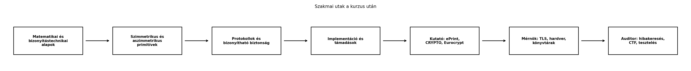

A kurzus végére a tanuló joggal kérdezheti: mi következik a megismert tételek, konstrukciók és támadások után? A kriptográfia nem lezárt tantárgy, hanem élő mérnöki és kutatási terület: a posztkvantum-migráció éppen most alakítja át a TLS- és PKI-ökoszisztémát, a homomorf titkosítás és a zero-knowledge bizonyítások pedig új adatvédelmi üzleti modelleket tesznek lehetővé. A megszerzett alapok – számelmélet, bizonyítható biztonság, szimmetrikus és nyilvános kulcsú primitívek, valamint a hibák és támadások ismerete – ahhoz elegendők, hogy a hallgató önállóan válasszon irányt kutatói, biztonsági mérnöki vagy auditorként. Ez az alfejezet ahhoz ad térképet, hogy a választás ne véletlenszerű legyen, hanem tudatos továbbtanulási terv kövesse.
A cél kettős. Egyrészt a hallgató tudjon saját továbbtanulási tervet készíteni a saját hátteréhez és céljaihoz igazítva. Másrészt legyen képes megnevezni, hogy a kurzus mely témáinak van aktív kutatási folytatása, és értse, hol érhető el a friss tudás. A korábbi alfejezetekben felépített fogalmak, mint például a biztonsági játékok, a redukciók, a mellékcsatornák vagy a KEM/DEM szerkezet, itt válnak a szakmai tájékozódás eszközeivé.
Az ábra a kurzus utáni három fő irányt és a hozzájuk vezető közös alapot mutatja. A lépések nem jelentenek szigorú sorrendet: a gyakorlatban a mérnöknek is kell értenie a bizonyítások nyelvét, az auditornak pedig a protokolltervezés logikáját.

A közös alap: aki a könyv I–X. részét végigjárta, annak van eszköze ahhoz, hogy elolvasson egy szakcikket, értékelje egy új AEAD-mód biztonsági korlátait, vagy felismerje egy hibás jelszótároló implementáció következményeit. A három doboz nem zárja ki egymást: a legjobb kutatók gyakran erős implementációs tudással is rendelkeznek, az auditorok pedig szakcikkeket olvasnak a legújabb támadásokról.
Definíció. A kriptográfiai kutatásban a preprint olyan, még nem feltétlenül lektorált kézirat, amelyet a szerzők nyilvános archívumban tesznek közzé. Az ott olvasható állításokat mindaddig nem szabad biztonsági garanciaként kezelni, amíg a közösség nem ellenőrizte a bizonyításokat és a feltevéseket.
Definíció. A CTF (Capture The Flag) olyan biztonsági verseny, amelyen a résztvevők szándékosan gyenge, játékra tervezett rendszerekben vagy kihívásokban fedeznek fel hibákat. A CTF-feladat kizárólag a verseny saját, helyben futtatott célpontjaira irányul; ugyanez a készség valós rendszeren csak megbízás és jogi keret között alkalmazható.
Definíció. A kriptográfiai szabványosítás az a nyilvános folyamat, amelynek során a NIST, az IETF, az ISO és más szervezetek algoritmusokat és protokollokat választanak ki, biztonsági elemzéseket kérnek be, referenciaimplementációkat és tesztvektorokat tesznek közzé. A szabványosítás nem bizonyíték, hanem széles körű közösségi szűrő.
Számos kurzusban érintett téma napjainkban is intenzív kutatást vonz. Az alábbi hét terület a leggyakrabban keresett továbblépési irány.
Posztkvantum-kriptanalízis. A rácsalapú konstrukciók – például az ML-KEM (Kyber) vagy az ML-DSA (Dilithium) és a Falcon – biztonsága a Module-LWE feltevésen alapul (az ML-DSA-é a Module-SIS feltevésen is). A kutatók folyamatosan javítják a rácsredukciós és kombinatorikus támadásokat, ezért a paramétereket időről időre felülvizsgálják. Aktív kérdés, hogy a strukturált rácsok mennyiben gyengébbek a teljes LWE-nél.
Fully homomorphic encryption (FHE) gyorsítása. A Homomorf titkosítás: Paillier és FHE elméletben lehetővé teszi a titkosított adatokon végzett számítást, de a bootstrapping és a nagy moduláris aritmetika miatt a gyakorlatban lassú. A kutatás a hardveres gyorsításra, az RLWE-paraméterekre, a párhuzamosításra és a gyakorlati API-kra összpontosít.
Zero-knowledge rendszerek. A zk-SNARK-ok áttekintése megmutatta az interaktív bizonyításokból a Fiat–Shamir-transzformációval nyert nem interaktív érvelések erejét. A kutatás ma a kisebb bizonyításméretekre, a gyorsabb verifikációra, a megbízható előkészítés (trusted setup) elkerülésére (átlátszó rendszerek) és a zk-VM-ekre irányul.
Formális verifikáció. Mivel a kriptográfiai protokollok hibái gyakran nem a primitívekben, hanem a protokollösszetételben vagy az implementációban jelentkeznek, a kutatók olyan eszközöket fejlesztenek, amelyek a biztonsági definíciókat gépileg ellenőrzött bizonyításokká alakítják. Ez a terület az IND-CCA és a malleabilitás és A digitális aláírás és az EUF-CMA biztonság játékok formalizálásától a teljes TLS-állapotgép verifikálásáig terjed.
Átláthatósági naplók. A Certificate Transparency és a Web PKI kudarcai mintája általánosítható: append-only naplókkal ellenőrizhetővé tehető a szoftvercsomagok kiadása, a kulcspublikáció vagy akár a választási rendszerek auditálhatósága. A kutatás a skálázódás, a tömör bizonyítások és az adatvédelmi követelmények összehangolására irányul.
Adatvédelmes technológiák. A Többszereplős biztonságos számítás és garbled circuits, a privát halmazmetszet (OPRF-alapú PSI) és a kereshető titkosítás aktív fejlődésben van, mert a GDPR és más szabályozások keresletet teremtenek a célzott hirdetések, egészségügyi adatelemzés és együttműködési esetek titkosított feldolgozására. Mindháromnál a kulcskérdés a szivárgási profil: mit tud meg a szerver vagy a másik fél (hozzáférési és keresési minta, halmazméret).
Párosításalapú és identitásalapú titkosítás (IBE). Az Identitásalapú titkosítás (és az attribútumalapú titkosítás) a kulcsletét-probléma (key escrow) és a hatékony visszavonás kérdéseivel marad aktív kutatási terület; párosításalapú konstrukciók a BLS-aláírással közös eszköztárat használnak.
A fenti területek többsége szorosan kapcsolódik a könyv korábbi alfejezeteihez. A hallgató ezért nem „nulláról” lép be a kutatásba, hanem a Rácsalapú kriptográfia, a Zero-knowledge bizonyítások vagy a Számítás titkosított adatokon fejezetek fogalomkészletével.
A kriptográfiai kutatás legfontosabb nyilvános archívuma az IACR ePrint, ahol a szerzők a hivatalos konferenciapublikáció előtt is közzéteszik eredményeiket. Ez gyors, de nem lektorált; a hibás bizonyítások és a túlzó állítások gyakoriak. A biztonságos hozzáállás: az ePrint-cikket először hipotézisként olvassuk, majd megkeressük, hogy a közösség elfogadta-e, vagy megjelent-e lektorált fórumon.
A legfontosabb lektorált konferenciák közé tartozik a CRYPTO, az EUROCRYPT és az ASIACRYPT, amelyeket az IACR szervez. A gyakorlati, üzemeltetési kérdéseket a Real World Crypto tárgyalja, míg a hardveres oldalcsatornák és beágyazott kriptográfia a CHES fóruma. A számítástudomány tágabb biztonsági konferenciáin – S&P, CCS, USENIX Security – szintén rendszeresen megjelennek kriptográfiai alkalmazások.
A gyakorlóplatformok közül a cryptopals feladatsorai a könyvben tanult támadások (ECB-detektálás, padding oracle, nonce-újrahasználat, length extension) kézzel történő reprodukálására épülnek. A CTF-ek – például a CryptoHack vagy a különböző online versenyek – ugyanezt játékos formában, változó nehézséggel kínálják. A CTF-feladatok azonban gyakran a tanulási célú, szándékosan elrontott konstrukciókra épülnek, ezért a sikerük nem azonos a valós rendszerek elleni támadási készséggel. Az etikai keret itt is érvényes: a gyakorlás mindig saját vagy a verseny által biztosított célpont ellen történik.
A szabványosítás nem kizárólag kutatókra tartozik; a hallgató is aktív résztvevő lehet. A NIST posztkvantum-szabványosítási folyamata nyilvános, a tervezetekhez megjegyzéseket lehet fűzni, referenciaimplementációkat lehet tesztelni, és a közösségi elemzések beépülnek a döntésekbe. Az IETF munkacsoportjai – különösen a CFRG – a gyakorlati protokollokba bekerülő primitíveket és üzemmódokat vitatják meg. Az ISO/IEC szintén szabványosít kriptográfiai mechanizmusokat.
A részvétel formái: - Megjegyzések és elemzések: egy-egy tervezet biztonsági állításainak ellenőrzése, akár egyszerű paraméterátszámolással. - Tesztvektorok és implementációk: a nyílt forráskódú referenciakódok futtatása, hibajegyek beküldése. - Archiválás és összehasonlítás: a szabványtervezetek változásainak követése, a támadási munkák összegyűjtése.
A könyvben használt FIPS-számok és algoritmusnevek – például ML-KEM, ML-DSA, SLH-DSA – a kiadói ellenőrzésig tájékoztató jellegűek; az aktuális szabványállapotot mindig a hivatalos NIST-közleményekben kell ellenőrizni.
A kriptográfiai tudás három tipikus pályán kamatozik.
Kutató. Jellemző munkakörnyezet: egyetem, állami kutatóintézet vagy ipari kutatólabor. A napi munka matematikai modellezésből, bizonyítási kísérletekből, prototípusokból és szakcikkek írásából áll. A legfontosabb készségek: absztrakt algebra, valószínűségszámítás, bonyolultságelmélet, valamint a bizonyítástechnika; a programozás itt demonstrációra szolgál, nem termékre.
Biztonsági mérnök. Jellemző munkakörnyezet: termékfejlesztő cég, felhőszolgáltató, pénzügyi intézmény, autóipar vagy egészségügy. A napi munka TLS-konfiguráció, AEAD-üzemmódválasztás, kulcskezelés, hardveres modulok integrálása, fuzzing és incident-válasz. A legfontosabb készségek: protokollismeret, Python/C/Rust, oldalcsatorna-tudatosság, fenyegetettség-modellezés.
Auditor és hibavadász. Jellemző munkakörnyezet:
biztonsági tanácsadó cég, belső audit csapat, hibavadász programok. A
napi munka kód átvizsgálása, rossz konstrukciók azonosítása, tanácsadás.
Az auditor nem ír éles kriptográfiai kódot, hanem megtalálja, ahol mások
rosszul tették. A legfontosabb készségek: támadói gondolkodásmód,
tesztelés, a tipikus hibák gyors felismerése (ECB, nonce-újrahasználat,
textbook RSA, == összehasonlítás MAC-ellenőrzésnél).
A három pálya közös alapkészségei: - a támadómodell pontos megfogalmazása, hiszen a biztonság soha nem abszolút, hanem feltételekhez kötött; - az angol nyelvű szakirodalom követése; - a forráskritika, mert a kriptográfiában a bizalmat nem a szerző hírneve, hanem a közösségi ellenőrzés alapozza meg; - a hibahatárok becslése, például az üzemmódok biztonsági korlátainak, a nonce-használatnak és a kulcsméreteknek az összevetése.
1. „A preprintszerző állítása bizonyított tény.” Az ePrint-cikkek nem lektoráltak; a helyes gyakorlat a konferenciafolyóirat vagy a széles körű szakmai konszenzus megkeresése.
2. „A CTF-készség közvetlenül valós rendszerekhez készít fel.” A CTF-feladatokban szándékosan elhagyják a valós védelmeket, és a célpontok jogilag elkülönítettek. A valós biztonsági munka emellett fenyegetés-modellezést, jogi kereteket és üzemeltetési felelősséget is igényel.
3. „A szabványosítás = bizonyított biztonság.” A szabványosítás széleskörű közösségi szűrő, de nem formális bizonyíték; az érettséghez idő és a valós implementációk vizsgálata kell. A hibás vállalati TLS-konfigurációk és a régi verziók visszaminősítései nem a primitívek szabványhibái.
4. „Elég a legújabb posztkvantum algoritmust bevezetni.” A „Gyűjtsd most, fejtsd vissza később” és a posztkvantum-migráció rendszerszintű feladat: kulcskezelés, tanúsítványok, szoftver- és hardvertámogatás, valamint a hibrid átmenet mind része a biztonságnak.
5. „Ha valamit nem értek, átugorhatom.” A kriptográfia kumulatív: a redukciók, a hibrid érvelés és a biztonsági korlátok megértése nélkül a szakcikkek legfontosabb állításai elvesznek. A jobb út a hiányzó matematikai lépések pótlása a könyv korábbi alfejezeteiből.
1. feladat (A). Nevezzen meg három aktív kutatási területet a könyvből, és mindegyikhez adja meg a kapcsolódó alfejezet címét.
2. feladat (A). Soroljon fel három lektorált kriptográfiai konferenciát és egy preprint-archívumot. Miben tér el a kettő az eredmények megbízhatósága szempontjából?
3. feladat (B). Készítsen 30 napos tanulási tervet a cryptopals első négy halmazának feldolgozására. Minden héthez adjon célt, a használt könyvfejezetet és egy ellenőrizhető kimenetet.
4. feladat (B). Válasszon egy posztkvantum-tervezetet (például ML-KEM vagy ML-DSA). Írjon rövid tervet arra, milyen elemzést végezne el, ha szabványtervezetet kellene kommentálnia. Milyen könyvben tanult támadástechnikákat alkalmazna?
5. feladat (C). Írjon érvelést arról, miért nem elég a bizonyítható biztonság egy protokoll éles bevezetéséhez. Térjen ki legalább három olyan tényezőre, amelyet a biztonsági bizonyítás gyakran nem fed le (például oldalcsatorna, kulcskezelés, paraméterválasztás).
6. feladat (D). Tervezzen egy mini CTF-feladatot a IV- és nonce-kezelés, nonce-újrahasználat és az XTS üzemmód vagy A textbook RSA támadásai témában. Adja meg a szándékosan gyenge játékimplementáció elvi vázlatát, a megoldás lépéseit és az etikus keretet kódkommentben.
Önellenőrzés – válaszok
1. feladat (A). Példa: posztkvantum-kriptanalízis – Rácsalapú kriptográfia; FHE-gyorsítás – Számítás titkosított adatokon; zero-knowledge rendszerek – Zero-knowledge bizonyítások.
2. feladat (A). CRYPTO, EUROCRYPT, ASIACRYPT; IACR ePrint. Az ePrint nem lektorált, gyors terjesztésre szolgál; a konferenciák bírálati folyamaton szűrik az eredményeket, de azok sem mentesek hibáktól.
3. feladat (B). (A cryptopals-halmazok tartalma emlékezetből; a cryptopals.com tartalomjegyzékével ellenőrizendő.) 1. hét: 1. halmaz (alap XOR, hex, Base64, ismétlődő kulcsú XOR, AES-ECB-detektálás) – A Vigenère-rejtjel, a Kasiski-módszer és a koincidenciaindex. 2. hét: 2. halmaz (blokk-módok, ECB/CBC-támadások) – ECB és CBC üzemmód. 3. hét: 3. halmaz (CBC padding oracle, CTR, fix nonce-ú CTR, MT19937) – Kitöltés és a padding oracle támadás, CTR, OFB és CFB: blokkrejtjelből folyamrejtjel. 4. hét: 4. halmaz (CTR-bitflipping, CBC key = IV, SHA-1 kulcsolt MAC, length extension, HMAC-időzítés) – A HMAC, Időzítéses támadások és konstans idejű programozás. Ellenőrizhető kimenet: minden feladat saját megoldószkriptje lefut a saját gépen, és a várt kimenet megjelenik; heti egy rövid írásos összefoglaló.
4. feladat (B). ML-KEM esetén például vizsgálnám a paraméterek biztonsági szintjét a legfrissebb rácsredukciós becslésekkel, ellenőrizném a KEM/DEM szerkezetnek való megfelelést, és keresném a dekapszulációs hibák időzítés-alapú szivárgását. A ElGamal-titkosítás, hibrid titkosítás és a KEM/DEM szerkezet és az Időzítéses támadások és konstans idejű programozás alfejezetekre támaszkodnék.
5. feladat (C). A bizonyítható biztonság ideális modellben, adott feltevések mellett érvényes. Az éles rendszerben az implementáció oldalcsatornákat szivárogtathat, a kulcsokat tárolni és rotálni kell, a paramétereket (görbe, modulus, prímek) meg kell választani, a nonce-kezelésnek és a kontextuskötésnek is kifogástalannak kell lennie. Mindezeket a bizonyítások gyakran absztrahálják.
6. feladat (D). A feladatvázlat: egy Python-ban írt,
oktatási célú folyamrejtjel, amely a nonce-újrahasználat miatt XOR-rel
kombinálható. A kommentben szerepel:
# OKTATÁSI CÉLRA – NEM ÉLES HASZNÁLATRA; a támadás csak saját adatra fut.
A megoldás lépései: két azonos nonce-szal titkosított üzenet XOR-je
kiejti a kulcsfolyamot, majd az ismert egyik üzenetből rekonstruálható a
másik.
A kurzus lezárása nem a kriptográfia végét, hanem az önálló tanulás kezdetét jelenti. A továbbtanulási terv három fő irányt követhet: kutatói, biztonsági mérnöki vagy auditori pályát. A friss eredmények az IACR ePrintben és a lektorált konferenciákon jelennek meg, de a preprint nem egyenlő a bizonyított eredménnyel. A gyakorlás alapja a cryptopals és a CTF-ek, kizárólag etikus keretben. A szabványosítás nyilvános folyamat, amelyhez kommenteléssel és teszteléssel a tanuló is hozzájárulhat. A legfontosabb aktív kutatási irányok a posztkvantum-kriptanalízis, az FHE-gyorsítás, a zero-knowledge rendszerek, a formális verifikáció, az átláthatósági naplók és az adatvédelmes technológiák. A megszerzett tudás akkor válik értékessé, ha a támadómodellt, a feltevéseket és a gyakorlati korlátokat mindig együtt kezeljük.
Az alfejezet összeállításakor a könyv egészének szakirodalmi hátteréből és a feladatban megadott forráskiindulópontokból dolgoztunk: Boneh–Shoup online kriptográfiai jegyzete, Coursera-kriptográfia kurzus, cryptopals feladatsor. Ezek a hivatkozások nem ellenőrzött bizonyítékok, csupán a téma közismert belépési pontjai. A konferenciák és szabványügyi szervezetek nevei (CRYPTO, EUROCRYPT, ASIACRYPT, Real World Crypto, NIST, IETF, ISO) a szakirodalomban stabilan ismertek, de az aktuális szabványállapot, FIPS- vagy RFC-számok és a legfrissebb paraméterajánlások a kiadói ellenőrzés során frissítendők. A kutatási irányok leírása a könyv korábbi fejezeteiben megalapozott ismeretekre épül, és nem igényel külső forrásból ellenőrzött állításokat.